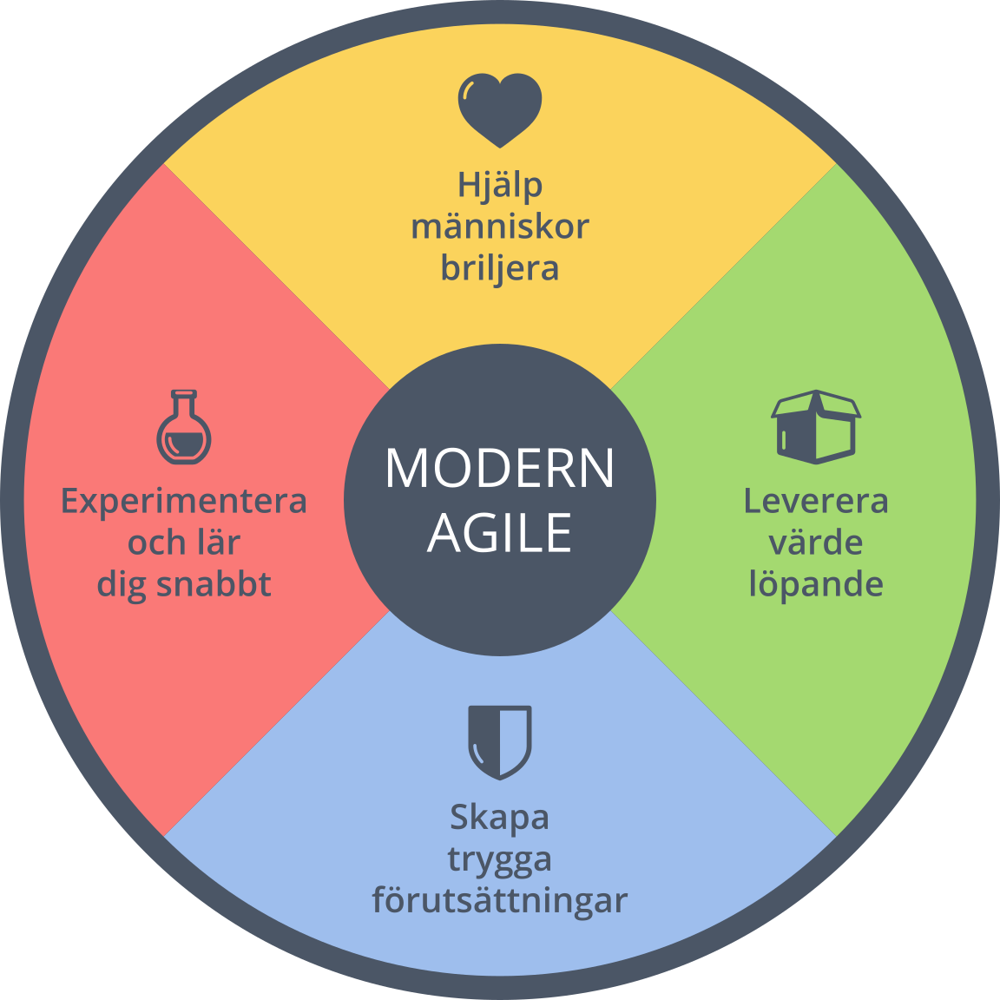

Att arbeta agilt är att följa några grundläggande värderingar samt de tolv principerna. Det finns olika former av agila arbetssätt så som kanban och scrum.
Tidigare i den här kursen under grupparbeten har vi fått prova på olika agila arbetssätt och också fått använda oss utav olika verktyg såsom: trello, teams, github och vscode med liveshare. Det finns ett manifest för Agil systemutveckling som lyder:
Vi finner bättre sätt att utveckla programvara genom att utveckla själva och hjälpa andra att utveckla. Genom detta arbete har vi kommit att värdesätta:
Individer och interaktioner framför processer och verktyg. Fungerande programvara framför omfattande dokumentation. Kundsamarbete framför kontraktsförhandling. Anpassning till förändring framför att följa en plan.
Det vill säga, medan det finns värde i punkterna till höger, värdesätter vi punkterna till vänster mer.
Det agila manifestets tolv principer:
Högsta prioritet är att tillfredsställa kunden med tidig och
kontinuerlig leverans av programvara
Välkomna förändrande krav. Uttnytja förändringar till kundens
konkurrensfördel
Leverera fungerande programvara ofta.
Verksamhetskunniga och utvecklare måste arbeta tillsammans dagligen
under hela projektet.
Bygg projekt kring motiverade individer, ge dem stöd och lita på
dem.
Kommunicera face to face för att effektivt formedla information till
och inom utvecklingsteamet.
Fungerande programvara är främsta måttet på framsteg.
Agila metoder verkar för uthållighet. Sponsorer, utvecklare och
användare skall kunna hålla jämn utvecklingstakt under obegränsad
tid.
kontinuerlig uppmärksamhet på förstklassig teknik och bra design
stärker anpassningsförmågan.
Enkelhet - konsten att maximera mängden arbete som inte görs - är
grundläggande.
Bäst arkitektur, krav och design växer fram med självorganiserande
team.
Med jämna mellanrum reflekterar teamet över hur det kan bli mer
effektivt och justerar sitt beteende därefter.
Modern Agile

Modern Agile är ett arbetssätt som följer fyra principer för att skapa en optimal arbetsplats och koncepetet beskrivs bäst av dessa principer.
Hjälp människor att briljera
"Make people awsome" säger man på engelska. Tanken är att skapa en miljö där alla får möjlighet till utveckla sin förmågor till full potential och får känna att de får bidra.
Det gäller inte bara personerna som jobbar med att skapa projektet utan alla runt omkring som bidrar på något sätt, det vill säga,skapar, använder, köper, fundar eller säljer.
Experimentera och lär dig snabbt
Om man jobbar i modern agile så måste man vara öppen för förändringar. Det gäller att lära sig genom att experimentera. Att lära sig om något blir fel utan att lägga skulden på någon.
På sidan "modernagile.org" referas det till "safe to fail". Det är alltså säkert att misslyckas. När man kör fast så ska man experimentera mer och om man misslyckas igen så har man lärt sig något på vägen.
Leverera värde löpande
Att leverera värde löpande är att man ska i till exempel mjukvarubranschen göra sig öppen för feedback till något som kanske bara är halvfärdigt och utveckla utefter det.
Om man leverar något tidigt och låter köpare och säljare vara med och se produkten i processen och ge feedback så kan man säga att det ger effekten av safe och awsome.
Det ger en möjlighet till feedback.
font-family: 'Poppins', sans-serif;
Skapa trygga förutsättningar
Med det här menas att skapa en så trygg miljö eller arbetsplats, inte bara fysikt utan också psykiskt. Man ser också att otrygghet kan bromsa potentialen.
Så man håller personlig information säker samtidigt som arbetsplatsen hålls säker för maximal pontetial och för att hålla personal trygg från oro.
Det finns många alternativa agila arbetssätt inom programmering som mobprogrammering, XP (extreme programming) eller DevOps.
Nu tänkte jag gå in lite på DevOps.
DevOps kombinerar mjukvarutvecklingen med IT-driften så att alla roller ska samarbeta för att skapa en bättre produkt.
Med DevOps vill man alltså att produkten ska ta kortare tid att komma till marknaden för att ge mer konkurrens och på samma tid bibehålla stabilitiet och tillförlitlighet.
Här är tre saker jag har valt att skriva om som jag tycker är viktigt just under internets historia.
Arpanet
Den här bilden visar hur "Arpanet" såg ut från början.
Den kanske viktigaste delen av internets historia är början. År 1969 skapade amerikansk militär internets föregångare "Arpanet".
Arpanet skapades så att forskarlag på olika universitet skulle kunna kommunicera med varandra via datorer. Det var mycket långsamt och i det första meddelandet som skickades så kraschade en av datorerna så bara 2 av 3 bokstäver togs emot.
Bilden visar Vint Cerf och Robert Kahn som sägs ha skapat TCP/IP-protokollen
Man skulle kunna säga att då TPC/IP uppfanns så uppfanns det internet vi använder oss utav idag. Vi använder oss fortfarande utav TCP/IP. Dessa protokoll uppfanns 1974 utav ingenjörerna Vint Cerf och Robert Kahn.
TCP/IP gjorde det snabbare att skicka paket mellan datorerna som var anslutna till nätverket. Men på den här tiden användes fortfarande "Arpanet".
Den här bilden visar hur kunde se ut att jobba med internet på 1990-talet.
På 1980-talet skapades många andra nätverk utöver världen så att universitet kunde börja kommunicera med varandra. Nätverken började också bli så populära att domäner behövde skapas
så att det gick att hantera den stora mängden av datorer som hade börjat att använda nätet. Man började använda sig utav modem för att "ringa upp". På 1990-talet efter att http, html och www hade skapats kunde man länka ihop all inormation världen över.
Så på 1990-talet vart det möjligt för allmänheten att börja använda sig utav internet.
Här sammanfattar jag lite om hur det har gått för mig under tiden jag har gjort den här sidan.
Vad var lätt?
För mig har generell styling varit enkel och html-delen. Jag tycker att semantik-delen har varit ganska enkel med. Sen så blev allt mycket lättare med när man lärt sig lite snippets och shortcuts.
Vad var mina utmaningar?
För mig har det varit lite strulit med att få allt där man vill ha det. Typ videos och bilder, särskilt om man håller på att skala om allt så det blir till en mobilenhet.
Vad hag jag lärt mig?
Jag har lärt mig mer om hur man ska hantera lågskalade skärmar som för mobilaenheter och jag har blivit bättre på att strukturerar upp allt. Det blir helt kaos i CSS filen men det bästa är väl att man kan använda sig mycket utav ctrl+f eller gömma delar som inte är relevanta där man är.
Vad kan jag förbättra tills nästa gång?
Jag kan öva mer, kanske förbereda filer bättre. Jag tycker att jag har haft hyffsad koll på hur allt fungerar men det går ju alltid att bli bättre jag är ju trots allt bara nybörjare.